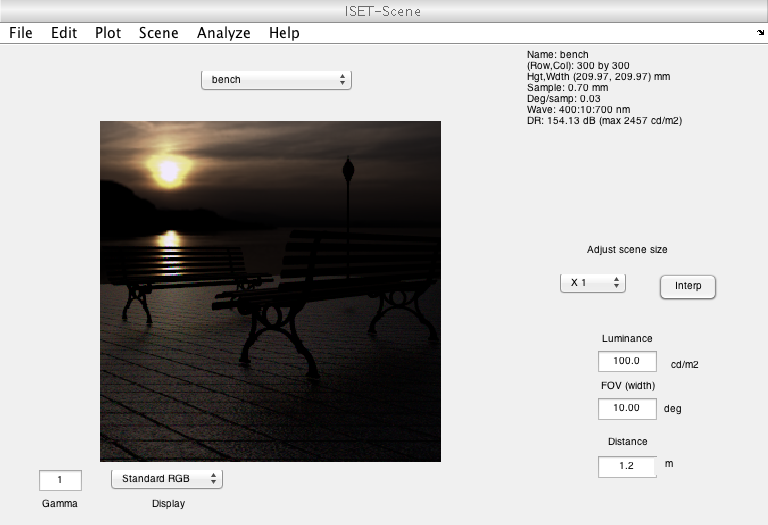

Contents
- Function implementing the isetbio validation code
- Initialize ISETBIO
- Some informative text
- This is the base directory with SCIEN (ISET, ISETBIO, CISET) files
- ls the lightfield directory for .mat files
- Loading a variable from inside a matlab file
- Load it via a FUSE/SSHFS mounted disk on OS/X and locally
- Show the scene
- Read an image file
- Show the image
function varargout = v_rdata(varargin) % % Test the rdata (remote data) routine % % This routine enables users to pull data from a remote file system on the % web. % % Copyright Imageval Consulting, LLC 2015 % % 7/15/15 dhb Brought this into the UnitTestToolbox world. varargout = UnitTest.runValidationRun(@ValidationFunction, nargout, varargin); end
Function implementing the isetbio validation code
function ValidationFunction(runTimeParams)
Initialize ISETBIO
close all; ieInit;
Some informative text
UnitTest.validationRecord('SIMPLE_MESSAGE', 'Validate rdata function.');
This is the base directory with SCIEN (ISET, ISETBIO, CISET) files
We are hosting this site on scarlet.
remote.host = 'http://scarlet.stanford.edu/validation/SCIEN';
ls the lightfield directory for .mat files
These are the light field data. Because no extension is specified the .mat files are listed
remote.directory = fullfile('LIGHTFIELD'); rdata('cd',remote); rdata('ls') % Returns all the .mat files in the web page listing
ans =
'benchLF.mat'
'coneArray.mat'
'metronome.mat'
'metronomeLF-lowres.mat'
'metronomeLF.mat'
'metronomePinhole.mat'
'metronomeWideDOF.mat'
'benchHDR.mat'
'slantedBarMultLF320.mat'
'slantedBarMultLF320Diffract.mat'
'slantedBarMultLF80720.mat'
'slantedBarMultLF80Diffract.mat'
'slantedBarMultLF80Diffract720.mat'
Loading a variable from inside a matlab file
This is an ISET scene with HDR data and a depth map
remote.directory = fullfile('LIGHTFIELD','scene'); tic; scene = rdata('load data',remote,'benchHDR.mat','scene'); elapsedTime = toc; fprintf('Remote read via rdata URL took %g seconds\n',elapsedTime); UnitTest.validationData('scene', scene);
Remote read via rdata URL took 99.4575 seconds
Load it via a FUSE/SSHFS mounted disk on OS/X and locally
This is not run generally because the paths are specific to DHB's machine.
CHECK_DHBTIMING = false; if (CHECK_DHBTIMING) % Load a copy on the mounted crimson disk tic; scene2 = load('/Users/Shared/Volumes/CrimsonSCIEN/LIGHTFIELD/scene/benchHDR.mat','scene'); elapsedTime = toc; fprintf('Remote read via FUSE/SSHFS took %g seconds\n',elapsedTime); % Load a copy off of David's desktop tic; scene3 = load('/Users/dhb/Desktop/benchHDR.mat','scene'); elapsedTime = toc; fprintf('Local read took %g seconds\n',elapsedTime); end
Show the scene
if (runTimeParams.generatePlots) vcAddObject(scene); sceneWindow; end
Read an image file
There are nice images here from Lubert Stryer
remote.directory = fullfile('RGB','LStryer'); img = rdata('read image',remote,'twoBirds.jpg'); UnitTest.validationData('img', img);
Show the image
if (runTimeParams.generatePlots) vcNewGraphWin; imshow(img); end
end